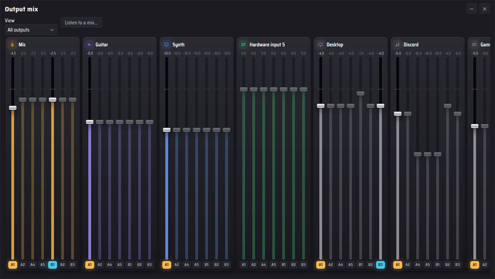
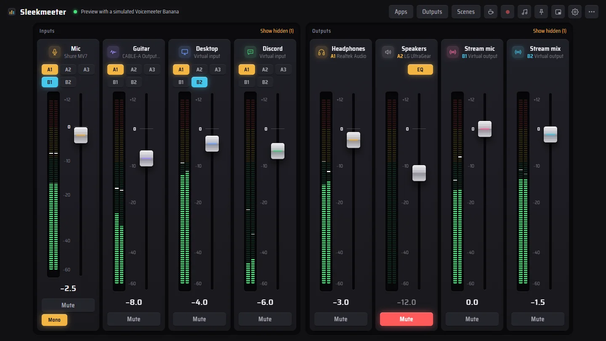
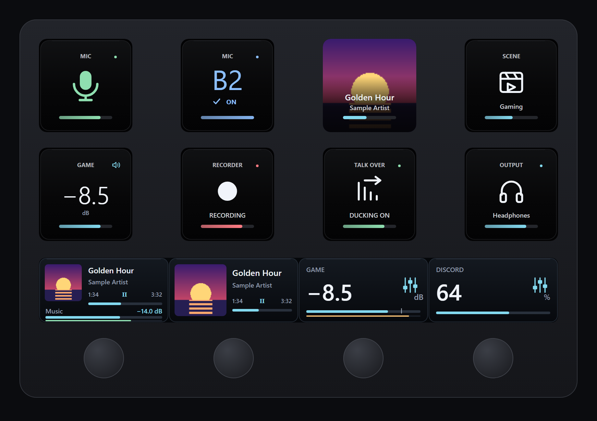
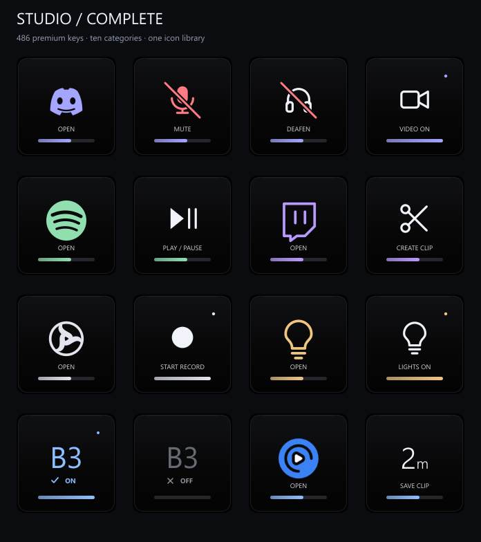

Sleekmeeter sits on top of Voicemeeter Standard, Banana and Potato and controls it through the official Remote API. Voicemeeter keeps doing the audio. You get fifteen themes, a separate mix for every output on Potato, a Stream Deck plugin, fades that never click, talk-over ducking, a soundboard and a remote on your phone.
Every level change glides, and the meters show post-fader level on the same scale as the fader, so you see signal and fader position together.
Output mix · Voicemeeter Potato
A different mix on every output
Less game on your stream than in your headphones, Discord in your ears but not on air. Potato keeps a level for every input on every output, and Sleekmeeter shows them all at once, like Voicemeeter's Streamer View.

Every input, every output
Mix in the header lays out each input's level on A1 to B3, with the output's on/off button under each slider. Drag, scroll, or double-click to match the main fader.
Pop it out New
Open the mix in a window of its own and keep it on a second screen. It remembers where you left it.
Faders set one output
Pick an output above the inputs and the normal faders set that output's mix. All outputs goes back.
Kept everywhere
Mute fades, ducking, Be right back and scenes keep the differences between outputs. Scenes even save them, which Voicemeeter's own scene file doesn't.
Appearance
Fifteen themes, to match your mood
A theme changes shapes and materials as well as colours. Faders become capsules, pucks, hearts, tick marks or starbursts, and the tray panel and volume overlay follow along. A game rule can even switch theme while you play.

Console
The dark hardware desk with amber light. The default.
Stream Deck
Your mixer on the Stream Deck
A plugin made for Sleekmeeter, with live keys and dials that show the real state: levels, mutes, routes and what's playing. Sleekmeeter spots the Stream Deck app and offers to install it, and keeps it up to date.

Dials Stream Deck +
Channel levelTurn to set a level, press or tap to mute, with a live meter.
Now PlayingAlbum art, title and track time from Spotify, Apple Music, a browser or any Windows player. Turn for a channel or to skip tracks.
App volumeOne app, such as Discord or a game: turn for its volume, press to mute.
Output mixOne input's level on one output, like game on your stream. Potato.
Keys Any Stream Deck
Mute mic · Mute channelGreen when live, red and slashed when muted. Hold-to-talk too.
Route to busTurn one route on or off, like your mic to B3, lit while it's on.
Swap routeNewOne press switches between two routes: headset mic or main mic on B2, game on speakers or headset.
Level stepNewUp, down or jump to a level. Hold to keep going. On Potato, change one output only: game +5 dB in your headphones, stream untouched.
Faders setMake the input faders set one output's mix. Potato.
Scenes · Sounds · BRBLoad a scene, play or stop sounds, go Be right back, record, toggle ducking, switch output profiles.
Now Playing keyAlbum art and progress on a key. Press to play or pause.

486 icons to match
The Studio icon pack adds keys for Discord, Spotify, Twitch, OBS, Philips Hue and more to the Stream Deck icon library, in the same dark style, for your other buttons.
The plugin talks to Sleekmeeter on your own PC through its phone-remote address, pasted once. Nothing goes over the internet.
Streaming
Run the show without leaving the game
Sounds, an on-stream overlay, chat commands and a phone remote. Everything runs from the tray while you play.
Header → Sounds
A soundboard that routes like a channel
Drop in wav, mp3, ogg or flac files and each becomes a button. Play them into a Voicemeeter virtual input and every sound gets its own fader. Give a sound a hotkey, sort sounds into groups, or turn a folder into one random-pack button.
Settings → Phone remote
The mixer in your pocket
Faders, mutes, Be right back, scenes, sounds and output profiles on any phone on your Wi-Fi. A secret key in the address keeps it yours, and nothing leaves your home network.
Settings → Phone remote · OBS Studio
An overlay that tells chat what's going on
Add one browser source in OBS and your scene shows a MUTED or BRB badge, a mic meter and the sound that just played. Connect OBS and Sleekmeeter can follow your scenes and react when you go live.
Settings → Twitch chat commands
Let your mods run the board
Add !brb, !scene and !sound, then choose who may use them: just you, you and your mods, or everyone. A cooldown stops spam. Channel point rewards can play sounds too.
Sleekmeeter joins chat as a silent, anonymous viewer. It never signs in and never posts.
Stream chatLive
Sleekmeeter is listening for your commands
Setup
The fiddly parts, handled
Switch devices, load a mix per game, tame app volumes and get a clean stream voice without touching Voicemeeter's own window.
“You're muted”
Talk into a muted mic and the overlay tells you, even with Sleekmeeter in the tray. No more ten minutes of silent streaming.
Go-live check
Mic on and sent to the stream, stream output has sound, OBS linked. One button checks it all, and it runs by itself when you go live.
Silent stream warning
If your stream goes quiet for too long, or starts clipping, while you're live, Sleekmeeter says so.
Music off stream
Keep your music out of the stream and your VODs while you're live or recording, and still hear it yourself.
Instant replay
Keeps up to the last two minutes of your stream in memory. One key saves them as a WAV file for clipping a moment.
Push to talk
Hold a key to open the mic. It closes a moment after you let go, so the end of a word isn't cut off. Push to mute works the other way round.
Devices that come back
Unplug USB headphones or lose Bluetooth and the audio engine restarts by itself when the device returns.
Global shortcuts
Mute, volume, scenes, sounds, recording, ducking and BRB from any app, with an on-screen level overlay.
Mic level check
Talk for eight seconds and it tells you if you're too quiet or too loud, then sets the fader for you.
Hear yourself
Records five seconds of your stream mix and plays it back, so you hear exactly what viewers hear.
Voicemeeter options
Sample rate, buffers, exclusive and swift modes and output delays without opening Voicemeeter.
Check my setup
Finds the usual problems: missing devices, shortcuts that couldn't register and a broken OBS link.
Fix my audio
If Windows starts playing sound straight to a device and skips Voicemeeter, one click puts it back. Or let Sleekmeeter keep it there by itself.
Voicemeeter backups
A copy of Voicemeeter's whole setup every day and before every big change, with a Restore button.
Drag apps onto channels
Every app making sound appears in a tray. Drop it on a channel and it plays through that fader from then on, and it's remembered.
Your channels, your way
Drag channels into any order, rename them, hide the ones you don't use, give each its own colour and icon.
Starts with Windows
Straight to the tray if you like, starts Voicemeeter for you and hides Voicemeeter's own window.
One-click updates
Downloads the new version, checks it against GitHub's checksum, installs it and reopens, then shows What's new. Check for updates any time in Settings.
Download
Get Sleekmeeter
Free and open source under the MIT license. Pick the file that suits your PC from the latest release.
RecommendedSleekmeeter-version-setup.exe
Installs just for you, with no administrator rights, and updates itself. If Voicemeeter isn't installed, it tells you and offers to open VB-Audio's download page.